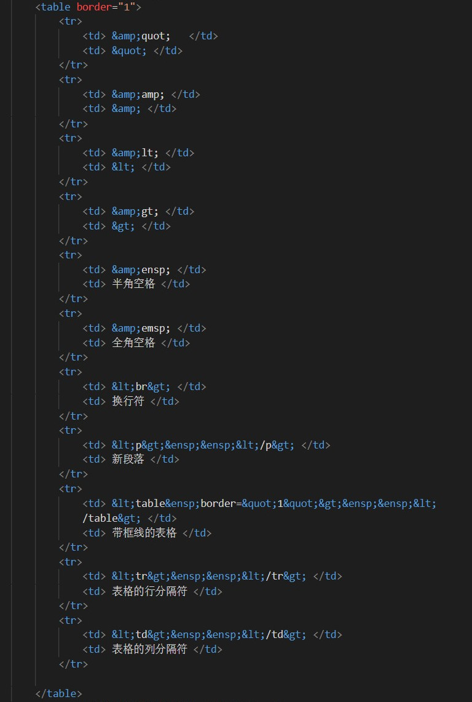

第一篇文：记录html学习过程
真·现学现用
1. 在DW视图里编辑文本时，按回车会生成新的段落。
2. html标签成对成对的，藏在< >和</ >中间的是它的内容。标签内容可以是新的标签，嵌套多少次都没问题。 标签头< >标签名内可以定义属性，不同的属性用空格隔开。
例如，在a标签【<a href="z-page001.html">第一篇文</a>】中，href是这个标签的属性名，“=”后的是属性值；【第一篇文】是这个标签的内容。
3. 如果打算在html网页上写文章的话，先在Word里面写好，把转义字符查找替换后，再粘贴到DW里面。不然直接在DW编辑会 十分麻烦，今天我就是一个例子。
4. 经常见到的代码。
| " | " |
| & | & |
| < | < |
| > | > |
|   | 半角空格 |
|   | 全角空格 |
| <br> | 换行符 |
| <p> </p> | 新段落 |
| <table border="1"> </table> | 带框线的表格 |
| <tr> </tr> | 表格的行分隔符 |
| <td> </td> | 表格的列分隔符 |
6. 我今天写的东西是这样的……就这几行字。

7. 然后我刚刚就发现了一个网页。可以文字图片表格之类的都能转成html语言。这样的话什么麻烦的转换都不用想了！https://wordhtml.com/
8. 我还要附上一个我现在学html的网站链接，方便路上也看一看。http://c.biancheng.net/html/
9. 网址的路径那个斜杠，是和问号共用一个按键的【/ 】，叫做【斜杠】。它也可以表示除号。和汉语顿号共用按键的【\】叫做【反斜杠】，某些编程语言会用它来表示符号的转义。
- 行内元素如<span>，可以和其他元素共用浏览器的一行显示。块状元素如<p>在浏览器中独占一行。
- 有序列表用<ol>标签表示，是order list的意思，他会将里面的各个元素用编号标起来。有序列表的元素用<li>表示。我第10项之后都用了ol标签了。
代码如下：
<ol start="10"> <li>文本1</li> <li>文本2</li> </ol> - 无续列表用<ul>标签表示，元素也是<li>。但是列表元素之前的符号会变成圆点。
代码如下： <ul start="10"> <li>文本1</li> <li>文本2</li> </ul>
显示效果：
- 文本1
- 文本2
- <dl> 标签用于创建定义列表。它是由定义标题和定义描述两部分组成的，具体语法格式如下：
<dl>
显示效果：
<dt>定义标题<dt>
<dd>定义描述<dd>
<dd>定义描述<dd>
</dl>- 定义标题
- 定义描述
- 定义描述
- 绝对路径和相对路径。本地绝对路径一般指从盘符开始，到文件名称结束；网络绝对路径指从网站的域名开始，到文件名结束，在使用时需要加上协议。相对路径以当前文件位置为参考点，到文件名称结束，其中，【./】代表当前位置（可省略），【../】 表示上一级目录， 【../../ 】表示上两级目录，以此类推。
绝对路径：
①D:/Hbulider/HBuilder/tools/nview/index.js
②C:/Users/admin/Desktop/C语言中文网/url/url.html
③http://c.biancheng.net/view/7410.html
相对路径：
①./html/login.html
②html/login.html
③../html/login.html - 定义锚点。在网页恰当的标签里面加上【id】这个属性。
像这样子：<h2 id="index">这是h2标题</h2> - 锚点链接，可以跳转到指定页面中指定位置的链接，用<a>标签表示。【#】后跟上定义好的锚点id，id的top代表顶部（省略也行）。
当前页面是这样的：<a href="#top">回到顶部</a> 或者 <a href="#">回到顶部</a>
跳到其他页面是这样的：<a href="./index.html#index">跳转到index页面</a>
现在就做了两个锚点链接。点击试试。
跳到本页的代码图 跳到博客首页的中部